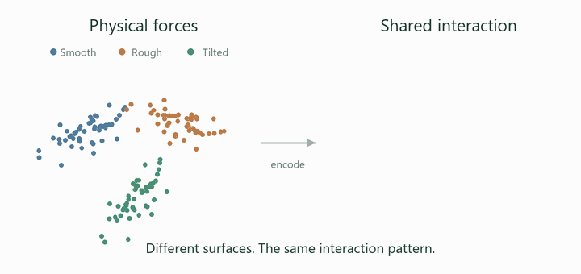
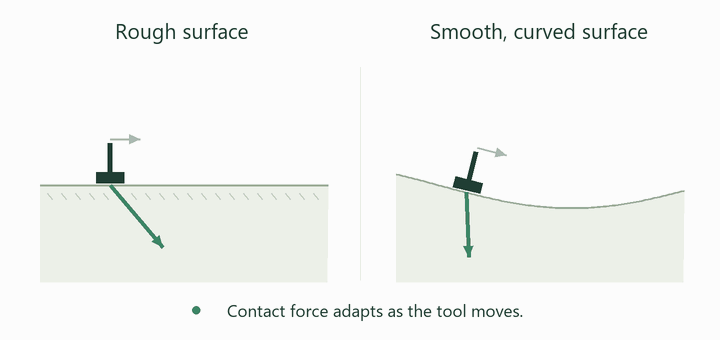
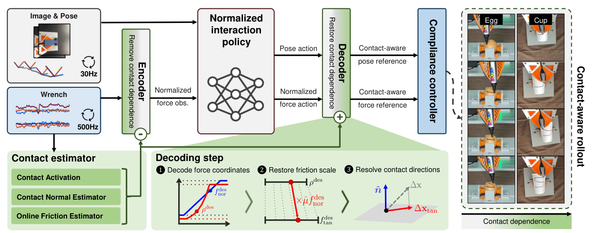
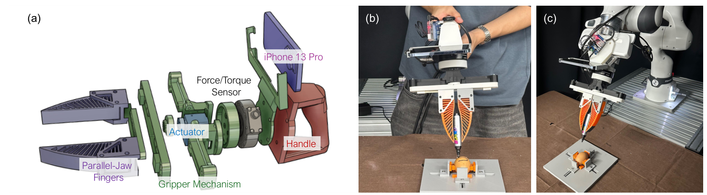
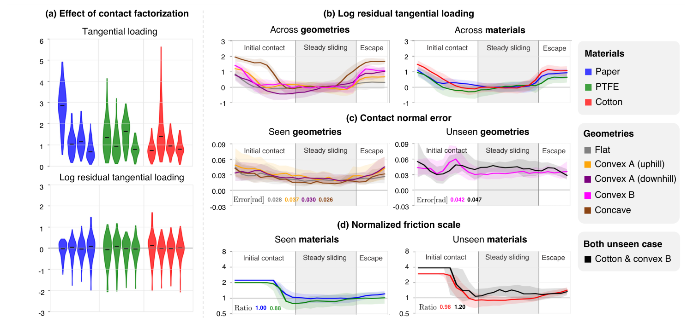
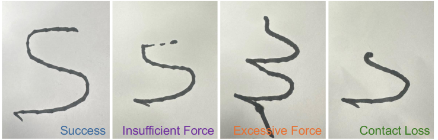

What stays the same
The intended motion and normalized interaction. The visuomotor policy stays fixed at deployment.
Fixed policy
Contact-rich robot learning
Preserve the behavior.
Adapt the interaction.
From handheld demonstrations to robot marking and wiping. A fixed policy adapts to changing surfaces and geometries.
See FACE in action
Full research video · 2 min 53 sec
Demonstration collection, real-robot comparisons, contact adaptation, and surface wiping. Open the MP4 ↗
The research
Generalizable contact-rich manipulation requires robots to preserve intended task behavior while adapting its physical realization to changing contact conditions. However, interaction forces can vary substantially with small changes in surface geometry, orientation, and friction, making policies trained directly on raw force measurements difficult to transfer beyond demonstrated conditions.
We introduce FACE, a contact-factorized imitation learning framework that separates intended task behavior from environment-dependent contact factors. Our representation expresses interaction forces in normalized, contact-relative coordinates, while a learned contact-normal estimator and an online friction estimator infer the local contact normal and effective friction scale. Together, these estimators enable force observations to be encoded and policy outputs to be decoded into physical motion and force commands during execution.
In this way, FACE adapts execution to current contact conditions while preserving the intended task behavior, without updating the policy parameters. We evaluate FACE on real-robot contact-rich manipulation under unseen variations in surface properties and geometry, demonstrating robust generalization across contact conditions through controlled comparisons with variants that adapt prior approaches to our setting.
The key idea
The same mark can require a different force on a wet surface or a different direction on a curved object. FACE separates these contact-dependent quantities from the behavior the policy learns.
The intended motion and normalized interaction. The visuomotor policy stays fixed at deployment.
A learned contact-normal estimator tracks local surface orientation from motion and wrench histories.
An online friction estimator adjusts the tangential force scale to the current contact conditions.
Method
Contact factors are used on both sides of the policy: to encode measured forces and to decode actions into physical commands.


Conceptual illustrations of contact factorization and adaptation.

Represent normal loading relative to operating bounds and tangential loading relative to friction-scaled normal force.
A visuomotor policy predicts relative pose and normalized force actions learned from nominal demonstrations.
Decode with the latest contact normal and friction estimate, then execute with hybrid position–force control.
Contact factorization and reparameterization → online contact estimation → hybrid compliance control.
From human demonstrations to deployment
Demonstrations capture motion and contact force on nominal objects. The same gripper and sensing assembly transfers to a Franka FR3 for execution under new contact conditions.
01 / Collect
Directly demonstrate the intended marking behavior with the force-sensing handheld gripper.
02 / Deploy
Preserve the sensing configuration while transferring the learned behavior to robot execution.
200 demonstrations per object category · 30 Hz RGB & pose · 500 Hz force/torque sensing

Real-robot experiments
Write an “S” while maintaining contact with fragile objects. Training uses nominal objects; deployment introduces new shapes, surface materials, and frictional conditions.
Two wrinkle orientations and three modified surfaces, alongside the nominal reference.
Reference condition
The undeformed surface used as the reference.
Geometry shift
Folds change the local contact direction.
Geometry shift
A different fold orientation changes the surface profile.
Surface shift
A higher-friction layer changes the force required for marking.
Surface shift
A smooth plastic layer changes the interaction force scale.
Surface shift
A wetted plastic layer creates a more slippery contact.
Representative runs from the research video. Aggregate success rates across the full evaluation appear below.
Controlled comparisons
Five methods are compared on paper cups and unseen eggs.
Paper cups / 3 conditions × 5 methods
Rows show a nominal cup, a wet plastic shell, and a horizontally wrinkled cup. The recordings expose contact loss, insufficient or excessive force, and incorrect motion.
Eggs / 5 methods
The same comparison extends to fragile curved objects. The paper evaluates five unseen egg instances, with five trials per instance for each method.
Quantitative evaluation
29 / 30 trials · 3 surface conditions
13 / 20 trials · 4 geometry conditions
17 / 25 trials · 5 egg instances
| Method | Cup surfaces 30 trials | Cup deformations 20 trials | Eggs 25 trials |
|---|---|---|---|
| Visual Observation Only | 10.0% | 0% | 0% |
| Force as Observation | 3.3% | 5% | 0% |
| No Force-Factorization | 50.0% | 45% | 0% |
| No Learned Contact-Normal Estimation | 16.7% | 0% | 4% |
| FACE Full method | 96.7% | 65% | 68% |
Controlled variants use the same policy backbone and training data. These are task success rates, with higher values indicating better performance. See the paper for per-condition results and failure breakdowns.
Average contact-normal error is 0.030 rad on seen geometries and 0.045 rad on unseen geometries. Friction estimates approach their reference scales during steady sliding.

Insufficient force, excessive force, contact loss, and incorrect motion are tracked separately. FACE still has insufficient-force failures on eggs and contact-loss failures on deformed cups.

Additional experiments
Beyond the experiments reported in the paper, we explored a range of contact-rich tasks. Ketchup wiping is one example: the robot must maintain interaction while the plate’s surface properties and geometry change.
The same wiping behavior on nominal, wet, soapy, and unseen surfaces.
Reference condition
Wipe ketchup from the nominal plate.
1× playbackSurface shift
Water changes the contact conditions during wiping.
1× playbackSurface shift
Soap introduces another change in the surface interaction.
1× playbackCombined shift
A different plate changes both material and shape.
1.5× playbackWith and without adaptation
Compare the recorded outcomes under the same four contact conditions.
Direct-force baseline
The nominal trial succeeds. The changed conditions show incorrect direction or excessive force in these recordings.
FACE / Full method
FACE completes all four recorded wiping demonstrations. Force scale and contact direction adapt during execution.
The clips retain the playback speeds and outcome labels shown in the final research video.
Surface preparation for the additional wiping experiment.
Takeaway
Contact factorization lets a fixed policy transfer across contact conditions by adapting force scale and direction online.
Friction estimation remains challenging when sliding is limited. Incorporating visual cues is a direction for future work.
Read the full paper ↗Reference
Citation for the supplied anonymous manuscript.
@misc{face,
title = {Contact-Aware Imitation Learning Through Contact Factorization},
author = {Anonymous Authors},
note = {Anonymous manuscript},
url = {https://rcilab.khu.ac.kr/face/}
}